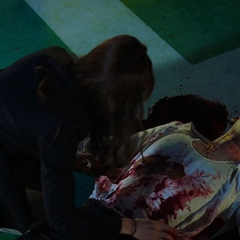
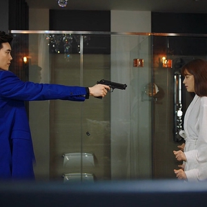
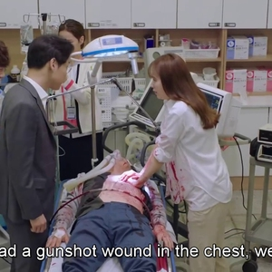
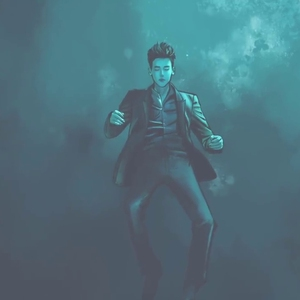
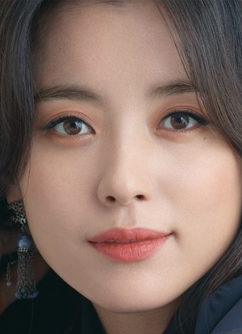
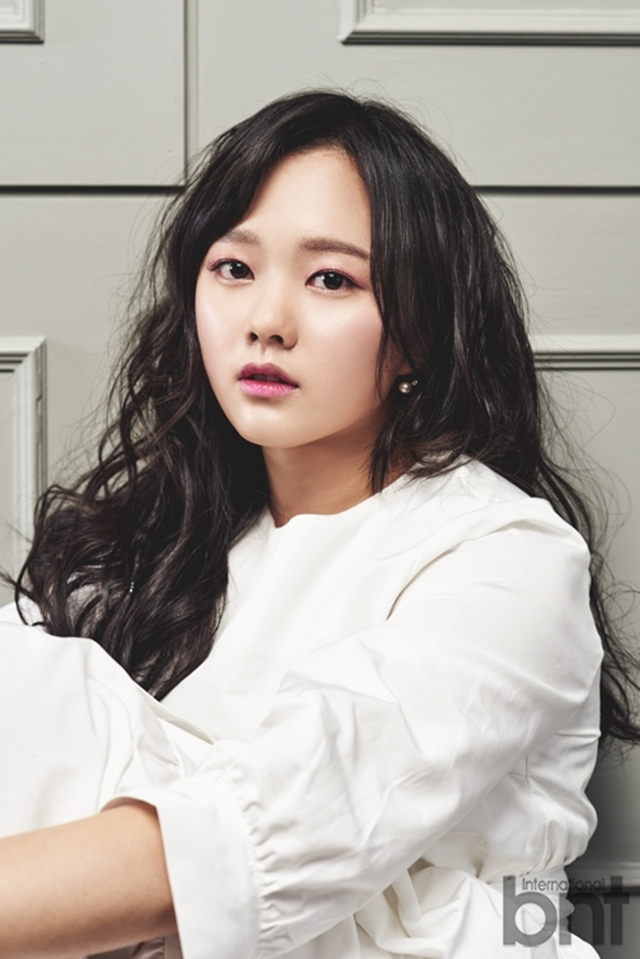
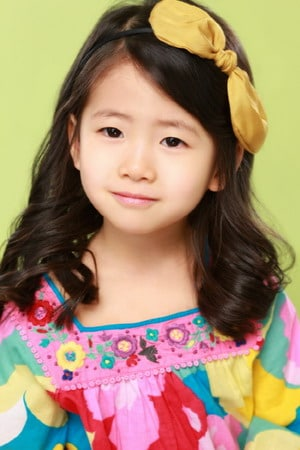

It is a 2019 South Korean television series The series focuses on the eponymous fictional webtoon entitled W, written and illustrated by its legendary author and illustrator Oh Seong-moo (Kim Eui-sung). W became famous in all of South Korea that even its version in print became a bestseller in the country.
Scene Photo
   Movie Info
Cardiothoracic surgeon Oh Yeon Joo's father mysteriously went missing while writing the last chapter of his webtoon "W". Yeon Joo goes to his office and is shocked to see a scene of a bloodied Kang Cheol, the main character of W, on her father's monitor. While reading something left behind by her father, a hand from the monitor pulled her in. She found herself on the rooftop of a building, next to a man lying down in blood. She manages to save him and realizes that the person she saved was Kang Cheol. She later discovers she can only enter and leave the webtoon depending on Kang Cheol's feelings.
- Genre:Fantasy-Romance
- Director:Jung Dae-Yoon
- Writer:Song Jae-Jung
- Original Release: July 20 September 14, 2016
- No. of Episodes: 16 Episodes
Cast
Lee Jong-suk as Kang ChulThe lead character of the popular comic series W. Calm, cool-minded and hardworking, Kang Chul is a multimillionaire, owner of broadcasting channel W and an Olympic gold medalist in shooting in his youth. His family was murdered by an elusive Murderer, yet Kang Chul was immediately suspected to be the killer due to his shooting background. After being proven innocent, Kang Chul seeks vengeance for the Murderer through his broadcasting channel. When he is stabbed on the rooftop of his penthouse by the Murderer, he meets Oh Yeon-joo who saves his life and with whom he falls in love with.
   Han Hyo-joo as Oh Yeon-joo, Hyun Seung-min as teenage Yeon-joo, Park Min-ha as child Yeon-jooA second-year resident cardiothoracic surgeon in Myung-se Hospital. She is the daughter of the Oh Seong-moo, author and illustrator of the famous webtoon W. A fan her own father's work, she goes to her father's studio to investigate his sudden disappearance. There, she is pulled into W's alternate universe and meets its protagonist Kang Chul with whom she eventually falls in love with.
Production
- Executive producer(s):
- Son Hyung-suk
- Producer(s):
- Oh Min-su
- Kim Sang-hun
- Cinematography:
- Jun Byung-mun
- Min Sung-wook
- Editor(s):
- Oh Serena
The series is helmed by director Jung Dae-yoon, who directed She Was Pretty and writer Song Jae-jung whose previous works include Nine: Nine Time Travels and Queen In-hyun's Man. The first script reading of the drama was held in May 2016. The drama is Han Hyo-joo's small screen comeback after 6 years.